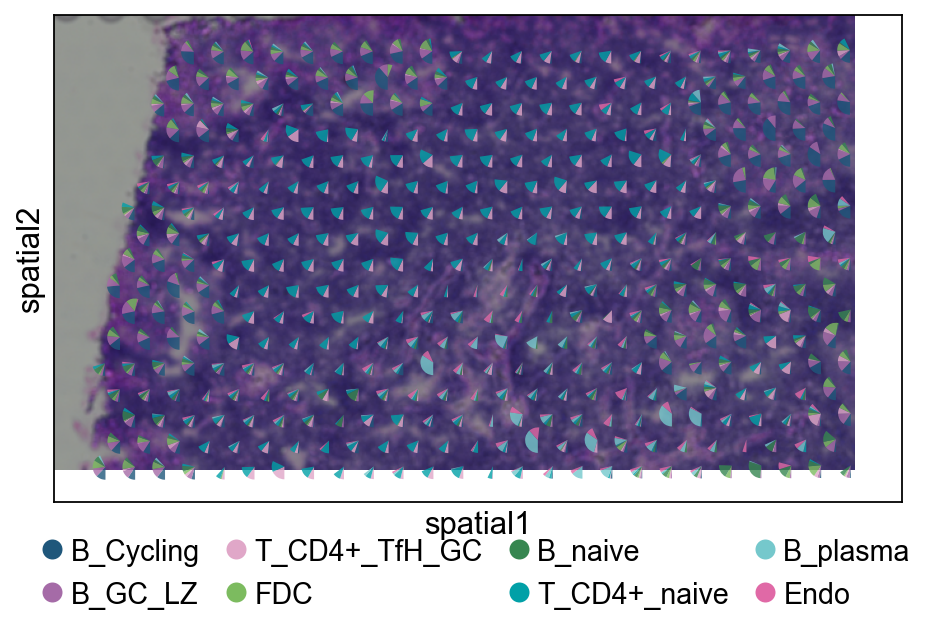

Spatial deconvolution without reference scRNA-seq#
This is a tutorial on an example real Spatial Transcriptomics (ST) data (CID44971_TNBC) from Wu et al., 2021. Raw tutorial could be found in https://starfysh.readthedocs.io/en/latest/notebooks/Starfysh_tutorial_real.html
Starfysh performs cell-type deconvolution followed by various downstream analyses to discover spatial interactions in tumor microenvironment. Specifically, Starfysh looks for anchor spots (presumably with the highest compositions of one given cell type) informed by user-provided gene signatures (see example) as priors to guide the deconvolution inference, which further enables downstream analyses such as sample integration, spatial hub characterization, cell-cell interactions, etc. This tutorial focuses on the deconvolution task. Overall, Starfysh provides the following options:
At omicverse, we have made the following improvements:
Easier visualization, you can use omicverse unified visualization for scientific mapping
Reduce installation dependency errors, we optimized the automatic selection of different packages, you don’t need to install too many extra packages and cause conflicts.
Base feature:
Spot-level deconvolution with expected cell types and corresponding annotated signature gene sets (default)
He, S., Jin, Y., Nazaret, A. et al. Starfysh integrates spatial transcriptomic and histologic data to reveal heterogeneous tumor–immune hubs. Nat Biotechnol (2024). https://doi.org/10.1038/s41587-024-02173-8
import scanpy as sc
import omicverse as ov
ov.style(font_path='Arial')
🔬 Starting plot initialization...
Using already downloaded Arial font from: /tmp/omicverse_arial.ttf
Registered as: Arial
🧬 Detecting GPU devices…
✅ NVIDIA CUDA GPUs detected: 1
• [CUDA 0] NVIDIA H100 80GB HBM3
Memory: 79.1 GB | Compute: 9.0
____ _ _ __
/ __ \____ ___ (_)___| | / /__ _____________
/ / / / __ `__ \/ / ___/ | / / _ \/ ___/ ___/ _ \
/ /_/ / / / / / / / /__ | |/ / __/ / (__ ) __/
\____/_/ /_/ /_/_/\___/ |___/\___/_/ /____/\___/
🔖 Version: 2.1.2rc1 📚 Tutorials: https://omicverse.readthedocs.io/
✅ plot_set complete.
Step 1: Prepare spatial transcriptomics (1 min)#
Purpose: load 10x Visium (Space Ranger outputs) or similar to obtain a coordinate-aware spatial AnnData (adata_sp).
Inputs: Visium count matrix and spatial coordinates (from the
spatialfolder)Outputs:
AnnDataobject (adata_sp) with spot coordinates and countsKey points:
Ensure maximal gene overlap with the scRNA-seq reference; map gene IDs if necessary.
For multiple samples, keep batch labels explicit to support merging and visualization.
adata_sp = sc.datasets.visium_sge(sample_id="V1_Human_Lymph_Node")
adata_sp.obs['sample'] = list(adata_sp.uns['spatial'].keys())[0]
adata_sp.var_names_make_unique()
Step 2: Prepare the gene sig marker#
gene_sig means the dataframe stored the marker gene in each columns. If you don’t have it, you can calculated it using ov.space.calculate_gene_signature
# Load your scRNA-seq reference
# Example: Human lymph node reference
adata_sc = ov.datasets.sc_ref_Lymph_Node()
gene_sig=ov.space.calculate_gene_signature(
adata_sc,
clustertype='Subset', # cell type name
rank=True,
key='rank_genes_groups',
foldchange=2,
topgenenumber=20
)
gene_sig.head()
🧬 Loading SC reference data for Lymph Node
⚠️ File ./data/sc_ref_Lymph_Node.h5ad already exists
Loading data from ./data/sc_ref_Lymph_Node.h5ad
✅ Successfully loaded: 73260 cells × 10237 genes
...get cell type marker
WARNING: It seems you use rank_genes_groups on the raw count data. Please logarithmize your data before calling rank_genes_groups.
B_Cycling B_GC_DZ B_GC_LZ B_GC_prePB B_IFN B_activated B_mem \
0 DEK BCAS4 MS4A1 PRDX1 MS4A1 CD83 CD83
1 HMGB1 LIMD2 CD40 MS4A1 HLA-DRA MS4A1 MS4A1
2 TUBA1B POU2AF1 SERPINA9 MEF2B MX1 HVCN1 HLA-DRB5
3 HMGB2 POLD4 LCP1 POU2AF1 STAT1 HLA-DRB5 HLA-DRA
4 H2AFZ EZR LRMP ALDH2 HLA-DQA1 HLA-DRA LY86
B_naive B_plasma B_preGC ... T_CD4+_TfH T_CD4+_TfH_GC T_CD4+_naive \
0 MS4A1 PDIA4 CD83 ... TRAC MAF LDHB
1 HVCN1 DERL3 MS4A1 ... PTGER4 C9orf16 GIMAP7
2 HLA-DRB5 SDF2L1 PRDX1 ... TRAT1 PASK RPL32
3 IGHD SSR3 HLA-DRB5 ... CD2 CD2 CD7
4 HLA-DRA MYDGF LILRA4 ... SOCS3 IL6ST RPL34
T_CD8+_CD161+ T_CD8+_cytotoxic T_CD8+_naive T_TIM3+ T_TfR T_Treg \
0 PTGER4 HCST LDHB PFN1 MAF TRAC
1 SYTL3 CST7 HCST S100A6 C9orf16 RGS1
2 NFKBIA RARRES3 NUCB2 HCST LAG3 FOXP3
3 IL32 SH2D1A CD7 NUCB2 CD2 IL32
4 TNFAIP3 IL32 CD8B SH3BGRL3 IL32 TRBC1
VSMC
0 LGALS1
1 S100A6
2 CALD1
3 TAGLN
4 LGALS3
[5 rows x 34 columns]
gene_sig.to_csv('data/gene_sig_Lymph_Node.csv')
gene_sig=ov.pd.read_csv('data/gene_sig_Lymph_Node.csv',index_col=0)
gene_sig.head()
B_Cycling B_GC_DZ B_GC_LZ B_GC_prePB B_IFN B_activated B_mem \
0 DEK BCAS4 MS4A1 PRDX1 MS4A1 CD83 CD83
1 HMGB1 LIMD2 CD40 MS4A1 HLA-DRA MS4A1 MS4A1
2 TUBA1B POU2AF1 SERPINA9 MEF2B MX1 HVCN1 HLA-DRB5
3 HMGB2 POLD4 LCP1 POU2AF1 STAT1 HLA-DRB5 HLA-DRA
4 H2AFZ EZR LRMP ALDH2 HLA-DQA1 HLA-DRA LY86
B_naive B_plasma B_preGC ... T_CD4+_TfH T_CD4+_TfH_GC T_CD4+_naive \
0 MS4A1 PDIA4 CD83 ... TRAC MAF LDHB
1 HVCN1 DERL3 MS4A1 ... PTGER4 C9orf16 GIMAP7
2 HLA-DRB5 SDF2L1 PRDX1 ... TRAT1 PASK RPL32
3 IGHD SSR3 HLA-DRB5 ... CD2 CD2 CD7
4 HLA-DRA MYDGF LILRA4 ... SOCS3 IL6ST RPL34
T_CD8+_CD161+ T_CD8+_cytotoxic T_CD8+_naive T_TIM3+ T_TfR T_Treg \
0 PTGER4 HCST LDHB PFN1 MAF TRAC
1 SYTL3 CST7 HCST S100A6 C9orf16 RGS1
2 NFKBIA RARRES3 NUCB2 HCST LAG3 FOXP3
3 IL32 SH2D1A CD7 NUCB2 CD2 IL32
4 TNFAIP3 IL32 CD8B SH3BGRL3 IL32 TRBC1
VSMC
0 LGALS1
1 S100A6
2 CALD1
3 TAGLN
4 LGALS3
[5 rows x 34 columns]
Step 3: Deconvolution with starfysh#
We perform n_repeat random restarts and select the best model with lowest loss for parameter c (inferred cell-type proportions):
Starfysh is integrated into the omicverse.space.Deconvolution class. Simply set method='starfysh'.
Key Parameters#
n_repeats: Number of restart to run Starfysh.epochs: number of iterationsdevice: the trainning device
# Initialize the Deconvolution object
decov_obj = ov.space.Deconvolution(
adata_sp=adata_sp
)
decov_obj.preprocess_sp(
mode='pearsonr',n_svgs=3000,target_sum=1e4,
subset_genes=False,
)
🔍 [2026-04-16 01:57:51] Running preprocessing in 'cpu' mode...
Begin robust gene identification
After filtration, 25187/36601 genes are kept.
Among 25187 genes, 22411 genes are robust.
✅ Robust gene identification completed successfully.
Begin size normalization: shiftlog and HVGs selection pearson
🔍 Count Normalization:
Target sum: 10000.0
Exclude highly expressed: True
Max fraction threshold: 0.2
⚠️ Excluding 1 highly-expressed genes from normalization computation
Excluded genes: ['IGKC']
✅ Count Normalization Completed Successfully!
✓ Processed: 4,035 cells × 22,411 genes
✓ Runtime: 0.46s
🔍 Highly Variable Genes Selection (Experimental):
Method: pearson_residuals
Target genes: 3,000
Theta (overdispersion): 100
✅ Experimental HVG Selection Completed Successfully!
✓ Selected: 3,000 highly variable genes out of 22,411 total (13.4%)
✓ Results added to AnnData object:
• 'highly_variable': Boolean vector (adata.var)
• 'highly_variable_rank': Float vector (adata.var)
• 'highly_variable_nbatches': Int vector (adata.var)
• 'highly_variable_intersection': Boolean vector (adata.var)
• 'means': Float vector (adata.var)
• 'variances': Float vector (adata.var)
• 'residual_variances': Float vector (adata.var)
Time to analyze data in cpu: 2.11 seconds.
✅ Preprocessing completed successfully.
Added:
'highly_variable_features', boolean vector (adata.var)
'means', float vector (adata.var)
'variances', float vector (adata.var)
'residual_variances', float vector (adata.var)
'counts', raw counts layer (adata.layers)
End of size normalization: shiftlog and HVGs selection pearson
╭─ SUMMARY: preprocess ──────────────────────────────────────────────╮
│ Duration: 2.79s │
│ Shape: 4,035 x 36,601 -> 4,035 x 22,411 │
│ │
│ CHANGES DETECTED │
│ ──────────────── │
│ ● VAR │ ✚ highly_variable (bool) │
│ │ ✚ highly_variable_features (bool) │
│ │ ✚ highly_variable_rank (float) │
│ │ ✚ means (float) │
│ │ ✚ n_cells (int) │
│ │ ✚ percent_cells (float) │
│ │ ✚ residual_variances (float) │
│ │ ✚ robust (bool) │
│ │ ✚ variances (float) │
│ │
│ ● UNS │ ✚ REFERENCE_MANU │
│ │ ✚ history_log │
│ │ ✚ hvg │
│ │ ✚ log1p │
│ │ ✚ status │
│ │ ✚ status_args │
│ │
│ ● LAYERS │ ✚ counts (sparse matrix, 4035x22411) │
│ │
╰────────────────────────────────────────────────────────────────────╯
✓ spatial transcriptomics data is preprocessed
# Run Starfysh deconvolution
decov_obj.deconvolution(
method='starfysh',
gene_sig=gene_sig,
starfysh_kwargs={
'n_repeats':3,
'epochs':200,
'patience':50,
'device':None,
'batch_size':32,
'alpha_mul':50,
'lr':1e-4,
'poe':False,
'verbose':True,
'n_anchors':60,
'window_size':3,
}
)
2 components are retained using conditional_number=40.00
Epoch[10/200], train_loss: 3739.8227, train_reconst: 3435.8661, train_u: 17.7807,train_z: 34.0135,train_c: 251.1881,train_l: 0.9743
Epoch[20/200], train_loss: 3479.4628, train_reconst: 3215.4911, train_u: 17.5112,train_z: 24.5828,train_c: 220.0223,train_l: 1.8554
Epoch[30/200], train_loss: 3421.7087, train_reconst: 3171.4792, train_u: 17.2893,train_z: 21.8268,train_c: 208.7923,train_l: 2.3212
Epoch[40/200], train_loss: 3381.0410, train_reconst: 3138.8110, train_u: 17.0931,train_z: 20.1051,train_c: 202.3889,train_l: 2.6429
Epoch[50/200], train_loss: 3357.5835, train_reconst: 3120.0735, train_u: 16.9209,train_z: 19.2607,train_c: 198.4411,train_l: 2.8872
Epoch[60/200], train_loss: 3345.9840, train_reconst: 3112.2256, train_u: 16.7730,train_z: 18.7113,train_c: 195.1971,train_l: 3.0770
Epoch[70/200], train_loss: 3332.2018, train_reconst: 3100.3144, train_u: 16.6509,train_z: 18.3578,train_c: 193.6669,train_l: 3.2118
Epoch[80/200], train_loss: 3318.3051, train_reconst: 3089.4841, train_u: 16.5486,train_z: 18.1068,train_c: 190.8750,train_l: 3.2907
Epoch[90/200], train_loss: 3315.0584, train_reconst: 3086.9586, train_u: 16.4646,train_z: 17.9379,train_c: 190.3497,train_l: 3.3476
Epoch[100/200], train_loss: 3311.5933, train_reconst: 3084.7545, train_u: 16.3952,train_z: 17.7315,train_c: 189.3583,train_l: 3.3538
Epoch[110/200], train_loss: 3303.1311, train_reconst: 3077.6632, train_u: 16.3384,train_z: 17.6075,train_c: 188.1654,train_l: 3.3566
Epoch[120/200], train_loss: 3301.5828, train_reconst: 3076.1006, train_u: 16.2916,train_z: 17.6252,train_c: 188.2064,train_l: 3.3589
Epoch[130/200], train_loss: 3296.4707, train_reconst: 3072.1426, train_u: 16.2537,train_z: 17.5486,train_c: 187.1621,train_l: 3.3637
Epoch[140/200], train_loss: 3295.5174, train_reconst: 3071.7121, train_u: 16.2223,train_z: 17.4611,train_c: 186.7499,train_l: 3.3720
Epoch[150/200], train_loss: 3297.3652, train_reconst: 3073.3800, train_u: 16.1969,train_z: 17.3850,train_c: 187.0221,train_l: 3.3812
Epoch[160/200], train_loss: 3292.8259, train_reconst: 3069.0755, train_u: 16.1761,train_z: 17.4166,train_c: 186.7654,train_l: 3.3923
Epoch[170/200], train_loss: 3290.2765, train_reconst: 3067.0478, train_u: 16.1591,train_z: 17.4877,train_c: 186.1896,train_l: 3.3923
Epoch[180/200], train_loss: 3289.3042, train_reconst: 3066.2879, train_u: 16.1452,train_z: 17.3955,train_c: 186.0831,train_l: 3.3925
Epoch[190/200], train_loss: 3292.6295, train_reconst: 3069.3383, train_u: 16.1339,train_z: 17.4213,train_c: 186.3419,train_l: 3.3941
Epoch[200/200], train_loss: 3289.2163, train_reconst: 3066.2839, train_u: 16.1247,train_z: 17.3724,train_c: 186.0385,train_l: 3.3970
Epoch[10/200], train_loss: 3739.8227, train_reconst: 3435.8661, train_u: 17.7807,train_z: 34.0135,train_c: 251.1881,train_l: 0.9743
Epoch[20/200], train_loss: 3479.4628, train_reconst: 3215.4911, train_u: 17.5112,train_z: 24.5828,train_c: 220.0223,train_l: 1.8554
Epoch[30/200], train_loss: 3421.7087, train_reconst: 3171.4792, train_u: 17.2893,train_z: 21.8268,train_c: 208.7923,train_l: 2.3212
Epoch[40/200], train_loss: 3381.0410, train_reconst: 3138.8110, train_u: 17.0931,train_z: 20.1051,train_c: 202.3889,train_l: 2.6429
Epoch[50/200], train_loss: 3357.5835, train_reconst: 3120.0735, train_u: 16.9209,train_z: 19.2607,train_c: 198.4411,train_l: 2.8872
Epoch[60/200], train_loss: 3345.9840, train_reconst: 3112.2256, train_u: 16.7730,train_z: 18.7113,train_c: 195.1971,train_l: 3.0770
Epoch[70/200], train_loss: 3332.2018, train_reconst: 3100.3144, train_u: 16.6509,train_z: 18.3578,train_c: 193.6669,train_l: 3.2118
Epoch[80/200], train_loss: 3318.3051, train_reconst: 3089.4841, train_u: 16.5486,train_z: 18.1068,train_c: 190.8750,train_l: 3.2907
Epoch[90/200], train_loss: 3315.0584, train_reconst: 3086.9586, train_u: 16.4646,train_z: 17.9379,train_c: 190.3497,train_l: 3.3476
Epoch[100/200], train_loss: 3311.5933, train_reconst: 3084.7545, train_u: 16.3952,train_z: 17.7315,train_c: 189.3583,train_l: 3.3538
Epoch[110/200], train_loss: 3303.1311, train_reconst: 3077.6632, train_u: 16.3384,train_z: 17.6075,train_c: 188.1654,train_l: 3.3566
Epoch[120/200], train_loss: 3301.5828, train_reconst: 3076.1006, train_u: 16.2916,train_z: 17.6252,train_c: 188.2064,train_l: 3.3589
Epoch[130/200], train_loss: 3296.4707, train_reconst: 3072.1426, train_u: 16.2537,train_z: 17.5486,train_c: 187.1621,train_l: 3.3637
Epoch[140/200], train_loss: 3295.5174, train_reconst: 3071.7121, train_u: 16.2223,train_z: 17.4611,train_c: 186.7499,train_l: 3.3720
Epoch[150/200], train_loss: 3297.3652, train_reconst: 3073.3800, train_u: 16.1969,train_z: 17.3850,train_c: 187.0221,train_l: 3.3812
Epoch[160/200], train_loss: 3292.8259, train_reconst: 3069.0755, train_u: 16.1761,train_z: 17.4166,train_c: 186.7654,train_l: 3.3923
Epoch[170/200], train_loss: 3290.2765, train_reconst: 3067.0478, train_u: 16.1591,train_z: 17.4877,train_c: 186.1896,train_l: 3.3923
Epoch[180/200], train_loss: 3289.3042, train_reconst: 3066.2879, train_u: 16.1452,train_z: 17.3955,train_c: 186.0831,train_l: 3.3925
Epoch[190/200], train_loss: 3292.6295, train_reconst: 3069.3383, train_u: 16.1339,train_z: 17.4213,train_c: 186.3419,train_l: 3.3941
Epoch[200/200], train_loss: 3289.2163, train_reconst: 3066.2839, train_u: 16.1247,train_z: 17.3724,train_c: 186.0385,train_l: 3.3970
Epoch[10/200], train_loss: 3739.8227, train_reconst: 3435.8661, train_u: 17.7807,train_z: 34.0135,train_c: 251.1881,train_l: 0.9743
Epoch[20/200], train_loss: 3479.4628, train_reconst: 3215.4911, train_u: 17.5112,train_z: 24.5828,train_c: 220.0223,train_l: 1.8554
Epoch[30/200], train_loss: 3421.7087, train_reconst: 3171.4792, train_u: 17.2893,train_z: 21.8268,train_c: 208.7923,train_l: 2.3212
Epoch[40/200], train_loss: 3381.0410, train_reconst: 3138.8110, train_u: 17.0931,train_z: 20.1051,train_c: 202.3889,train_l: 2.6429
Epoch[50/200], train_loss: 3357.5835, train_reconst: 3120.0735, train_u: 16.9209,train_z: 19.2607,train_c: 198.4411,train_l: 2.8872
Epoch[60/200], train_loss: 3345.9840, train_reconst: 3112.2256, train_u: 16.7730,train_z: 18.7113,train_c: 195.1971,train_l: 3.0770
Epoch[70/200], train_loss: 3332.2018, train_reconst: 3100.3144, train_u: 16.6509,train_z: 18.3578,train_c: 193.6669,train_l: 3.2118
Epoch[80/200], train_loss: 3318.3051, train_reconst: 3089.4841, train_u: 16.5486,train_z: 18.1068,train_c: 190.8750,train_l: 3.2907
Epoch[90/200], train_loss: 3315.0584, train_reconst: 3086.9586, train_u: 16.4646,train_z: 17.9379,train_c: 190.3497,train_l: 3.3476
Epoch[100/200], train_loss: 3311.5933, train_reconst: 3084.7545, train_u: 16.3952,train_z: 17.7315,train_c: 189.3583,train_l: 3.3538
Epoch[110/200], train_loss: 3303.1311, train_reconst: 3077.6632, train_u: 16.3384,train_z: 17.6075,train_c: 188.1654,train_l: 3.3566
Epoch[120/200], train_loss: 3301.5828, train_reconst: 3076.1006, train_u: 16.2916,train_z: 17.6252,train_c: 188.2064,train_l: 3.3589
Epoch[130/200], train_loss: 3296.4707, train_reconst: 3072.1426, train_u: 16.2537,train_z: 17.5486,train_c: 187.1621,train_l: 3.3637
Epoch[140/200], train_loss: 3295.5174, train_reconst: 3071.7121, train_u: 16.2223,train_z: 17.4611,train_c: 186.7499,train_l: 3.3720
Epoch[150/200], train_loss: 3297.3652, train_reconst: 3073.3800, train_u: 16.1969,train_z: 17.3850,train_c: 187.0221,train_l: 3.3812
Epoch[160/200], train_loss: 3292.8259, train_reconst: 3069.0755, train_u: 16.1761,train_z: 17.4166,train_c: 186.7654,train_l: 3.3923
Epoch[170/200], train_loss: 3290.2765, train_reconst: 3067.0478, train_u: 16.1591,train_z: 17.4877,train_c: 186.1896,train_l: 3.3923
Epoch[180/200], train_loss: 3289.3042, train_reconst: 3066.2879, train_u: 16.1452,train_z: 17.3955,train_c: 186.0831,train_l: 3.3925
Epoch[190/200], train_loss: 3292.6295, train_reconst: 3069.3383, train_u: 16.1339,train_z: 17.4213,train_c: 186.3419,train_l: 3.3941
Epoch[200/200], train_loss: 3289.2163, train_reconst: 3066.2839, train_u: 16.1247,train_z: 17.3724,train_c: 186.0385,train_l: 3.3970
✓ starfysh is done
The starfysh result is saved in self.adata_cell2location
The starfysh model is saved in self.starfysh_model
Step 4: Visualization (5–15 min)#
We provide multiple views: single-target spatial heatmaps, multi-target overlays, and local pie charts. Start with global inspection, then zoom into biologically relevant regions for higher-resolution assessment.
4.1 Spatial value dotplot#
annotation_list=['B_Cycling', 'B_GC_LZ', 'T_CD4+_TfH_GC', 'FDC',
'B_naive', 'T_CD4+_naive', 'B_plasma', 'Endo']
sc.pl.spatial(
decov_obj.adata_cell2location,
cmap='magma',
# show first 8 cell types
color=annotation_list,
ncols=4, size=1.3,
img_key='hires',
# limit color scale at 99.2% quantile of cell abundance
#vmin=0, vmax='p99.2'
)
{kind=link}
4.2 Multi-target overlay#
import matplotlib as mpl
clust_labels = annotation_list[:5]
clust_col = ['' + str(i) for i in clust_labels] # in case column names differ from labels
with mpl.rc_context({'figure.figsize': (6, 6),'axes.grid': False}):
fig = ov.pl.plot_spatial(
adata=decov_obj.adata_cell2location,
# labels to show on a plot
color=clust_col, labels=clust_labels,
show_img=True,
# 'fast' (white background) or 'dark_background'
style='fast',
# limit color scale at 99.2% quantile of cell abundance
max_color_quantile=0.992,
# size of locations (adjust depending on figure size)
circle_diameter=4,
reorder_cmap = [#0,
1,2,3,4,6], #['yellow', 'orange', 'blue', 'green', 'purple', 'grey', 'white'],
colorbar_position='right',
#palette=color_dict
)
{kind=link}
4.3 Pie plot#
We recommend cropping a region of interest before plotting to avoid overly dense pie charts on whole slides.
adata_s = ov.space.crop_space_visium(
decov_obj.adata_cell2location,
crop_loc=(0, 0),
crop_area=(500, 1000),
library_id=list(decov_obj.adata_cell2location.uns['spatial'].keys())[0] ,
scale=1
)
sc.pl.spatial(adata_s, cmap='magma',
# show first 8 cell types
color=annotation_list[0],
ncols=4, size=1.3,
img_key='hires',
# limit color scale at 99.2% quantile of cell abundance
#vmin=0, vmax='p99.2'
)
{kind=link}
color_dict=dict(zip(annotation_list,
ov.pl.sc_color))
fig, ax = ov.plt.subplots(figsize=(8, 4))
sc.pl.spatial(
adata_s,
basis='spatial',
color=None,
size=1.3,
img_key='hires',
ax=ax,
show=False
)
ov.pl.add_pie2spatial(
adata_s,
img_key='hires',
cell_type_columns=annotation_list[:],
ax=ax,
colors=color_dict,
pie_radius=10,
remainder='gap',
legend_loc=(0.5, -0.25),
ncols=4,
alpha=0.8
)
#plt.show()
<Axes: xlabel='spatial1', ylabel='spatial2'>
{kind=link}
